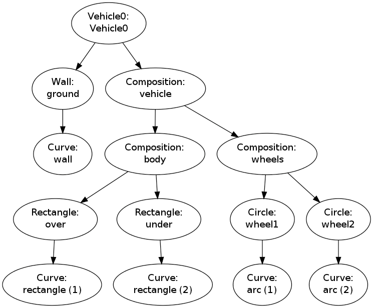

Implementing a drawing program provides a very good example on the usefulness of object-oriented programming. In the following we shall develop the simpler parts of a relatively small and compact drawing program for making sketches of the type shown in Figure 6. This is a typical principal sketch of a physics problem, here involving a rolling wheel on an inclined plane. The sketch is made up many individual elements: a rectangle filled with a pattern (the inclined plane), a hollow circle with color (the wheel), arrows with labels (the \( N \) and \( Mg \) forces, and the \( x \) axis), an angle with symbol \( \theta \), and a dashed line indicating the starting location of the wheel.
Drawing software and plotting programs can produce such figures quite easily in principle, but the amount of details the user needs to control with the mouse can be substantial. Software more tailored to producing sketches of this type would work with more convenient abstractions, such as circle, wall, angle, force arrow, axis, and so forth. And as soon we start programming to construct the figure we get a range of other powerful tools at disposal. For example, we can easily translate and rotate parts of the figure and make an animation that illustrates the physics of the problem. Programming as a superior alternative to interactive drawing is the mantra of this section.
Classes are very suitable for implementing the various components that build up a sketch. In particular, we shall demonstrate that as soon as some classes are established, more are easily added. Enhanced functionality for all the classes is also easy to implement in common, generic code that can immediately be shared by all present and future classes.
The fundamental data structure involved in this case study is a hierarchical tree, and much of the material on implementation issues targets how to traverse tree structures with recursive function calls. This topic is of key relevance in a wide range of other applications as well.
We start by demonstrating a convenient user interface for making sketches of the type in Figure 6. However, it is more appropriate to start with a significantly simpler example as depicted in Figure 7. This toy sketch consists of several elements: two circles, two rectangles, and a "ground" element.

A typical program creating these five elements is shown next.
After importing the pysketcher package, the first task is always to
define a coordinate system:
from pysketcher import *
drawing_tool.set_coordinate_system(
xmin=0, xmax=10, ymin=-1, ymax=8)
R = 1 # radius of wheel
L = 4 # distance between wheels
H = 2 # height of vehicle body
w_1 = 5 # position of front wheel
drawing_tool.set_coordinate_system(xmin=0, xmax=w_1 + 2*L + 3*R,
ymin=-1, ymax=2*R + 3*H)
Circle object
in an intuitive fashion:
wheel1 = Circle(center=(w_1, R), radius=R)
To translate the geometric information about the wheel1 object to
instructions for the plotting engine (in this case Matplotlib), one calls the
wheel1.draw(). To display all drawn objects, one issues
drawing_tool.display(). The typical steps are hence:
wheel1 = Circle(center=(w_1, R), radius=R)
wheel1.draw()
# Define other objects and call their draw() methods
drawing_tool.display()
drawing_tool.savefig('tmp.png') # store picture
The next wheel can be made by taking a copy of wheel1 and
translating the object to the right according to a
displacement vector \( (L,0) \):
wheel2 = wheel1.copy()
wheel2.translate((L,0))
The two rectangles are also made in an intuitive way:
under = Rectangle(lower_left_corner=(w_1-2*R, 2*R),
width=2*R + L + 2*R, height=H)
over = Rectangle(lower_left_corner=(w_1, 2*R + H),
width=2.5*R, height=1.25*H)
Instead of calling the draw method of every object, we can
group objects and call draw, or perform other operations, for
the whole group. For example, we may collect the two wheels
in a wheels group and the over and under rectangles
in a body group. The whole vehicle is a composition
of its wheels and body groups. The code goes like
wheels = Composition({'wheel1': wheel1, 'wheel2': wheel2})
body = Composition({'under': under, 'over': over})
vehicle = Composition({'wheels': wheels, 'body': body})
The ground is illustrated by an object of type Wall,
mostly used to indicate walls in sketches of mechanical systems.
A Wall takes the x and y coordinates of some curve,
and a thickness parameter, and creates a thick curve filled
with a simple pattern. In this case the curve is just a flat
line so the construction is made of two points on the
ground line (\( (w_1-L,0) \) and \( (w_1+3L,0) \)):
ground = Wall(x=[w_1 - L, w_1 + 3*L], y=[0, 0], thickness=-0.3*R)
We may now collect all the objects in a "top" object that contains the whole figure:
fig = Composition({'vehicle': vehicle, 'ground': ground})
fig.draw() # send all figures to plotting backend
drawing_tool.display()
drawing_tool.savefig('tmp.png')
fig.draw() call will visit
all subgroups, their subgroups,
and so forth in the hierarchical tree structure of
figure elements,
and call draw for every object.
Controlling the line style, line color, and line width is
fundamental when designing figures. The pysketcher
package allows the user to control such properties in
single objects, but also set global properties that are
used if the object has no particular specification of
the properties. Setting the global properties are done like
drawing_tool.set_linestyle('dashed')
drawing_tool.set_linecolor('black')
drawing_tool.set_linewidth(4)
wheels.set_linestyle('solid')
wheels.set_linecolor('red')
Geometric figures can be specified as filled, either with a color or with a special visual pattern:
# Set filling of all curves
drawing_tool.set_filled_curves(color='blue', pattern='/')
# Turn off filling of all curves
drawing_tool.set_filled_curves(False)
# Fill the wheel with red color
wheel1.set_filled_curves('red')
The composition of objects making up the figure
is hierarchical, similar to a family, where
each object has a parent and a number of children. Do a
print fig to display the relations:
ground
wall
vehicle
body
over
rectangle
under
rectangle
wheels
wheel1
arc
wheel2
arc
fig contains two objects, ground and vehicleground contains an object wallvehicle contains two objects, body and wheelsbody contains two objects, over and underwheels contains two objects, wheel1 and wheel2rectangle and arc. These are of type Curve
and automatically generated by the classes Rectangle and Circle.
More detailed information can be printed by
print fig.show_hierarchy('std')
ground (Wall):
wall (Curve): 4 coords fillcolor='white' fillpattern='/'
vehicle (Composition):
body (Composition):
over (Rectangle):
rectangle (Curve): 5 coords
under (Rectangle):
rectangle (Curve): 5 coords
wheels (Composition):
wheel1 (Circle):
arc (Curve): 181 coords
wheel2 (Circle):
arc (Curve): 181 coords
Curve objects), and
special settings of the basic figure (fillcolor, line types, etc.).
For example, wheel2 is a Circle object consisting of an arc,
which is a Curve object consisting of 181 coordinates (the
points needed to draw a smooth circle). The Curve objects are the
only objects that really holds specific coordinates to be drawn.
The other object types are just compositions used to group
parts of the complete figure.
One can also get a graphical overview of the hierarchy of figure objects
that build up a particular figure fig.
Just call fig.graphviz_dot('fig') to produce a file fig.dot in
the dot format. This file contains relations between parent and
child objects in the figure and can be turned into an image,
as in Figure 8, by
running the dot program:
Terminal> dot -Tpng -o fig.png fig.dot

The call fig.graphviz_dot('fig', classname=True) makes a fig.dot file
where the class type of each object is also visible, see
Figure 9. The ability to write out the
object hierarchy or view it graphically can be of great help when
working with complex figures that involve layers of subfigures.
Figure 9: Hierarchical relation between figure objects, including their class names.

Any of the objects can in the program be reached through their names, e.g.,
fig['vehicle']
fig['vehicle']['wheels']
fig['vehicle']['wheels']['wheel2']
fig['vehicle']['wheels']['wheel2']['arc']
fig['vehicle']['wheels']['wheel2']['arc'].x # x coords
fig['vehicle']['wheels']['wheel2']['arc'].y # y coords
fig['vehicle']['wheels']['wheel2']['arc'].linestyle
fig['vehicle']['wheels']['wheel2']['arc'].linetype
fig['vehicle']['wheels'].set_filled_curves('blue')
fig['vehicle']['wheels'].set_linewidth(6)
fig['vehicle']['wheels'].set_linecolor('black')
fig['vehicle']['body']['under'].set_filled_curves('red')
fig['vehicle']['body']['over'].set_filled_curves(pattern='/')
fig['vehicle']['body']['over'].set_linewidth(14)
fig['vehicle']['body']['over']['rectangle'].linewidth = 4
Curve object directly, while the line above,
accesses the Rectangle object, which will then set the linewidth of
its Curve object, and other objects if it had any.
The result of the actions above is shown in Figure 10.
Figure 10: Left: Basic line-based drawing. Right: Thicker lines and filled parts.

We can also change position of parts of the figure and thereby make animations, as shown next.
Can we make our little vehicle roll? A first attempt will be to
fake rolling by just displacing all parts of the vehicle.
The relevant parts constitute the fig['vehicle'] object.
This part of the figure can be translated, rotated, and scaled.
A translation along the ground means a translation in \( x \) direction,
say a length \( L \) to the right:
fig['vehicle'].translate((L,0))
drawing_tool.erase()
fig.draw()
drawing_tool.display()
fig.draw() the
new coordinates of the vehicle will not be communicated to
the drawing tool, and without calling display the updated
drawing will not be visible.
A figure that moves in time is conveniently realized by the
function animate:
animate(fig, tp, action)
fig is the entire figure, tp is an array of
time points, and action is a user-specified function that changes
fig at a specific time point. Typically, action will move
parts of fig.
In the present case we can define the movement through a velocity
function v(t) and displace the figure v(t)*dt for small time
intervals dt. A possible velocity function is
def v(t):
return -8*R*t*(1 - t/(2*R))
v(t)*dt becomes
def move(t, fig):
x_displacement = dt*v(t)
fig['vehicle'].translate((x_displacement, 0))
The animate function will for each time point t in tp erase
the drawing, call action(t, fig), and show the new figure by
fig.draw() and drawing_tool.display().
Here we choose a resolution of the animation corresponding to
25 time points in the time interval \( [0,2R] \):
import numpy
tp = numpy.linspace(0, 2*R, 25)
dt = tp[1] - tp[0] # time step
animate(fig, tp, move, pause_per_frame=0.2)
pause_per_frame adds a pause, here 0.2 seconds, between
each frame in the animation.
We can also ask animate to store each frame in a file:
files = animate(fig, tp, move_vehicle, moviefiles=True,
pause_per_frame=0.2)
files variable, here 'tmp_frame_%04d.png',
is the printf-specification used to generate the individual
plot files. We can use this specification to make a video
file via ffmpeg (or avconv on Debian-based Linux systems such
as Ubuntu). Videos in the Flash and WebM formats can be created
by
Terminal> ffmpeg -r 12 -i tmp_frame_%04d.png -vcodec flv mov.flv
Terminal> ffmpeg -r 12 -i tmp_frame_%04d.png -vcodec libvpx mov.webm
convert program
from the ImageMagick software suite:
Terminal> convert -delay 20 tmp_frame*.png mov.gif
Terminal> animate mov.gif # play movie
<img src="mov.gif"> in the HTML code.
The individual PNG frames can be directly played in a web browser by running
Terminal> scitools movie output_file=mov.html fps=5 tmp_frame*
from scitools.std import movie
movie(files, encoder='html', output_file='mov.html')
mov.html into a web browser
to play the movie.
Try to run vehicle0.py and
then load mov.html into a browser, or play one of the mov.*
video files. Alternatively, you can view a ready-made movie.
It is time to show rolling wheels. To this end, we add spokes to the wheels, formed by two crossing lines, see Figure 11. The construction of the wheels will now involve a circle and two lines:
wheel1 = Composition({
'wheel': Circle(center=(w_1, R), radius=R),
'cross': Composition({'cross1': Line((w_1,0), (w_1,2*R)),
'cross2': Line((w_1-R,R), (w_1+R,R))})})
wheel2 = wheel1.copy()
wheel2.translate((L,0))
wheel1.copy() copies all the objects that make
up the first wheel, and wheel2.translate translates all
the copied objects.

The move function now needs to displace all the objects in the
entire vehicle and also rotate the cross1 and cross2
objects in both wheels.
The rotation angle follows from the fact that the arc length
of a rolling wheel equals the displacement of the center of
the wheel, leading to a rotation angle
angle = - x_displacement/R
w_1 tracking the \( x \) coordinate of the center
of the front wheel, we can rotate that wheel by
w1 = fig['vehicle']['wheels']['wheel1']
from math import degrees
w1.rotate(degrees(angle), center=(w_1, R))
rotate function takes two parameters: the rotation angle
(in degrees) and the center point of the rotation, which is the
center of the wheel in this case. The other wheel is rotated by
w2 = fig['vehicle']['wheels']['wheel2']
w2.rotate(degrees(angle), center=(w_1 + L, R))
w_1 += x_displacement.
The complete move function with translation of the entire
vehicle and rotation of the wheels then becomes
w_1 = w_1 + L # start position
def move(t, fig):
x_displacement = dt*v(t)
fig['vehicle'].translate((x_displacement, 0))
# Rotate wheels
global w_1
w_1 += x_displacement
# R*angle = -x_displacement
angle = - x_displacement/R
w1 = fig['vehicle']['wheels']['wheel1']
w1.rotate(degrees(angle), center=(w_1, R))
w2 = fig['vehicle']['wheels']['wheel2']
w2.rotate(degrees(angle), center=(w_1 + L, R))
The advantages with making figures this way, through programming rather than using interactive drawing programs, are numerous. For example, the objects are parameterized by variables so that various dimensions can easily be changed. Subparts of the figure, possible involving a lot of figure objects, can change color, linetype, filling or other properties through a single function call. Subparts of the figure can be rotated, translated, or scaled. Subparts of the figure can also be copied and moved to other parts of the drawing area. However, the single most important feature is probably the ability to make animations governed by mathematical formulas or data coming from physics simulations of the problem, as shown in the example above.
We shall now explain how we can, quite easily, realize software with the capabilities demonstrated in the previous examples. Each object in the figure is represented as a class in a class hierarchy. Using inheritance, classes can inherit properties from parent classes and add new geometric features.
We introduce class Shape as superclass for all specialized objects
in a figure. This class does not store any data, but provides a
series of functions that add functionality to all the subclasses.
This will be shown later.
One simple subclass is Rectangle, specified by the coordinates of
the lower left corner and its width and height:
class Rectangle(Shape):
def __init__(self, lower_left_corner, width, height):
p = lower_left_corner # short form
x = [p[0], p[0] + width,
p[0] + width, p[0], p[0]]
y = [p[1], p[1], p[1] + height,
p[1] + height, p[1]]
self.shapes = {'rectangle': Curve(x,y)}
Any subclass of Shape will have a constructor that takes geometric
information about the shape of the object and creates a dictionary
self.shapes with the shape built of simpler shapes. The most
fundamental shape is Curve, which is just a collection of \( (x,y) \)
coordinates in two arrays x and y. Drawing the Curve object is
a matter of plotting y versus x. For class Rectangle the x
and y arrays contain the corner points of the rectangle in
counterclockwise direction, starting and ending with in the lower left
corner.
Class Line is also a simple class:
class Line(Shape):
def __init__(self, start, end):
x = [start[0], end[0]]
y = [start[1], end[1]]
self.shapes = {'line': Curve(x, y)}
def __call__(self, x):
"""Given x, return y on the line."""
x, y = self.shapes['line'].x, self.shapes['line'].y
self.a = (y[1] - y[0])/(x[1] - x[0])
self.b = y[0] - self.a*x[0]
return self.a*x + self.b
self.a). The true source code of Line therefore
provides a more general solution at the cost of significantly longer
code with more tests.
A circle implies a somewhat increased complexity. Again we represent
the geometric object by a Curve object, but this time the Curve
object needs to store a large number of points on the curve such that
a plotting program produces a visually smooth curve. The points on
the circle must be calculated manually in the constructor of class
Circle. The formulas for points \( (x,y) \) on a curve with radius \( R \)
and center at \( (x_0, y_0) \) are given by
$$
\begin{align*}
x &= x_0 + R\cos (t),\\
y &= y_0 + R\sin (t),
\end{align*}
$$
where \( t\in [0, 2\pi] \). A discrete set of \( t \) values in this
interval gives the corresponding set of \( (x,y) \) coordinates on
the circle. The user must specify the resolution as the number
of \( t \) values. The circle's radius and center must of course
also be specified.
We can write the Circle class as
class Circle(Shape):
def __init__(self, center, radius, resolution=180):
self.center, self.radius = center, radius
self.resolution = resolution
t = linspace(0, 2*pi, resolution+1)
x0 = center[0]; y0 = center[1]
R = radius
x = x0 + R*cos(t)
y = y0 + R*sin(t)
self.shapes = {'circle': Curve(x, y)}
Line we can offer the possibility to give an angle
\( \theta \) (equivalent to \( t \) in the formulas above)
and then get the corresponding \( x \) and \( y \) coordinates:
def __call__(self, theta):
"""Return (x, y) point corresponding to angle theta."""
return self.center[0] + self.radius*cos(theta), \
self.center[1] + self.radius*sin(theta)
A part of a circle, an arc, is a frequent geometric object when
drawing mechanical systems. The arc is constructed much like
a circle, but \( t \) runs in \( [\theta_s, \theta_s + \theta_a] \). Giving
\( \theta_s \) and \( \theta_a \) the slightly more descriptive names
start_angle and arc_angle, the code looks like this:
class Arc(Shape):
def __init__(self, center, radius,
start_angle, arc_angle,
resolution=180):
self.start_angle = radians(start_angle)
self.arc_angle = radians(arc_angle)
t = linspace(self.start_angle,
self.start_angle + self.arc_angle,
resolution+1)
x0 = center[0]; y0 = center[1]
R = radius
x = x0 + R*cos(t)
y = y0 + R*sin(t)
self.shapes = {'arc': Curve(x, y)}
Having the Arc class, a Circle can alternatively be defined as
a subclass specializing the arc to a circle:
class Circle(Arc):
def __init__(self, center, radius, resolution=180):
Arc.__init__(self, center, radius, 0, 360, resolution)
Class Curve sits on the coordinates to be drawn, but how is that
done? The constructor of class Curve just stores the coordinates,
while a method draw sends the coordinates to the plotting program to
make a graph. Or more precisely, to avoid a lot of (e.g.)
Matplotlib-specific plotting commands in class Curve we have created
a small layer with a simple programming interface to plotting
programs. This makes it straightforward to change from Matplotlib to
another plotting program. The programming interface is represented by
the drawing_tool object and has a few functions:
plot_curve for sending a curve in terms of \( x \) and \( y \) coordinates
to the plotting program,set_coordinate_system for specifying the graphics area,erase for deleting all elements of the graph,set_grid for turning on a grid (convenient while constructing the figure),set_instruction_file for creating a separate file with all
plotting commands (Matplotlib commands in our case),set_X functions where X is some property like
linecolor, linestyle, linewidth, filled_curves.
Any class in the Shape hierarchy inherits set_X functions for
setting properties of curves. This information is propagated to
all other shape objects in the self.shapes dictionary. Class
Curve stores the line properties together with the coordinates
of its curve and propagates this information to the plotting program.
When saying vehicle.set_linewidth(10), all objects that make
up the vehicle object will get a set_linewidth(10) call,
but only the Curve object at the end of the chain will actually
store the information and send it to the plotting program.
A rough sketch of class Curve reads
class Curve(Shape):
"""General curve as a sequence of (x,y) coordintes."""
def __init__(self, x, y):
self.x = asarray(x, dtype=float)
self.y = asarray(y, dtype=float)
def draw(self):
drawing_tool.plot_curve(
self.x, self.y,
self.linestyle, self.linewidth, self.linecolor, ...)
def set_linewidth(self, width):
self.linewidth = width
det set_linestyle(self, style):
self.linestyle = style
...
The simple classes Line, Arc, and Circle could can the geometric
shape through just one Curve object. More complicated shapes are
built from instances of various subclasses of Shape. Classes used
for professional drawings soon get quite complex in composition and
have a lot of geometric details, so here we prefer to make a very
simple composition: the already drawn vehicle from Figure
7. That is, instead of composing the drawing
in a Python program as shown above, we make a subclass Vehicle0 in
the Shape hierarchy for doing the same thing.
The Shape hierarchy is found in the pysketcher package, so to use these
classes or derive a new one, we need to import pysketcher. The constructor
of class Vehicle0 performs approximately the same statements as
in the example program we developed for making the drawing in
Figure 7.
from pysketcher import *
class Vehicle0(Shape):
def __init__(self, w_1, R, L, H):
wheel1 = Circle(center=(w_1, R), radius=R)
wheel2 = wheel1.copy()
wheel2.translate((L,0))
under = Rectangle(lower_left_corner=(w_1-2*R, 2*R),
width=2*R + L + 2*R, height=H)
over = Rectangle(lower_left_corner=(w_1, 2*R + H),
width=2.5*R, height=1.25*H)
wheels = Composition(
{'wheel1': wheel1, 'wheel2': wheel2})
body = Composition(
{'under': under, 'over': over})
vehicle = Composition({'wheels': wheels, 'body': body})
xmax = w_1 + 2*L + 3*R
ground = Wall(x=[R, xmax], y=[0, 0], thickness=-0.3*R)
self.shapes = {'vehicle': vehicle, 'ground': ground}
Any subclass of Shape must define the shapes attribute, otherwise
the inherited draw method (and a lot of other methods too) will
not work.
The painting of the vehicle, as shown in the right part of
Figure 10, could in class Vehicle0
be offered by a method:
def colorful(self):
wheels = self.shapes['vehicle']['wheels']
wheels.set_filled_curves('blue')
wheels.set_linewidth(6)
wheels.set_linecolor('black')
under = self.shapes['vehicle']['body']['under']
under.set_filled_curves('red')
over = self.shapes['vehicle']['body']['over']
over.set_filled_curves(pattern='/')
over.set_linewidth(14)
The usage of the class is simple: after having set up an appropriate coordinate system as previously shown, we can do
vehicle = Vehicle0(w_1, R, L, H)
vehicle.draw()
drawing_tool.display()
drawing_tool.erase()
vehicle.colorful()
vehicle.draw()
drawing_tool.display()
Vehicle0 is found in the file
vehicle2.py.
The pysketcher package contains a wide range of classes for various
geometrical objects, particularly those that are frequently used in
drawings of mechanical systems.
The really powerful feature of our class hierarchy is that we can add
much functionality to the superclass Shape and to the "bottom" class
Curve, and then all other classes for various types of geometrical shapes
immediately get the new functionality. To explain the idea we may
look at the draw method, which all classes in the Shape
hierarchy must have. The inner workings of the draw method explain
the secrets of how a series of other useful operations on figures
can be implemented.
Note that we work with two types of hierarchies in the
present documentation: one Python class hierarchy,
with Shape as superclass, and one object hierarchy of figure elements
in a specific figure. A subclass of Shape stores its figure in the
self.shapes dictionary. This dictionary represents the object hierarchy
of figure elements for that class. We want to make one draw call
for an instance, say our class Vehicle0, and then we want this call
to be propagated to all objects that are contained in
self.shapes and all is nested subdictionaries. How is this done?
The natural starting point is to call draw for each Shape object
in the self.shapes dictionary:
def draw(self):
for shape in self.shapes:
self.shapes[shape].draw()
Shape and inherited in
subclasses like Vehicle0. Let v be a Vehicle0 instance.
Seemingly, a call v.draw() just calls
v.shapes['vehicle'].draw()
v.shapes['ground'].draw()
draw method of a Composition object
whose self.shapes attributed has two elements: wheels and body.
Since class Composition inherits the same draw method, this method will
run through self.shapes and call wheels.draw() and body.draw().
Now, the wheels object is also a Composition with the same draw
method, which will run through self.shapes, now containing
the wheel1 and wheel2 objects. The wheel1 object is a Circle,
so calling wheel1.draw() calls the draw method in class Circle,
but this is the same draw method as shown above. This method will
therefore traverse the circle's shapes dictionary, which we have seen
consists of one Curve element.
The Curve object holds the coordinates to be plotted so here draw
really needs to do something "physical", namely send the coordinates to
the plotting program. The draw method is outlined in the short listing
of class Curve shown previously.
We can go to any of the other shape objects that appear in the figure
hierarchy and follow their draw calls in the similar way. Every time,
a draw call will invoke a new draw call, until we eventually hit
a Curve object at the "bottom" of the figure hierarchy, and then that part
of the figure is really plotted (or more precisely, the coordinates
are sent to a plotting program).
When a method calls itself, such as draw does, the calls are known as
recursive and the programming principle is referred to as
recursion. This technique is very often used to traverse hierarchical
structures like the figure structures we work with here. Even though the
hierarchy of objects building up a figure are of different types, they
all inherit the same draw method and therefore exhibit the same
behavior with respect to drawing. Only the Curve object has a different
draw method, which does not lead to more recursion.
Understanding recursion is usually a challenge. To get a better idea of
how recursion works, we have equipped class Shape with a method recurse
that just visits all the objects in the shapes dictionary and prints
out a message for each object.
This feature allows us to trace the execution and see exactly where
we are in the hierarchy and which objects that are visited.
The recurse method is very similar to draw:
def recurse(self, name, indent=0):
# print message where we are (name is where we come from)
for shape in self.shapes:
# print message about which object to visit
self.shapes[shape].recurse(indent+2, shape)
indent parameter governs how much the message from this
recurse method is intended. We increase indent by 2 for every
level in the hierarchy, i.e., every row of objects in Figure
12. This indentation makes it easy to
see on the printout how far down in the hierarchy we are.
A typical message written by recurse when name is 'body' and
the shapes dictionary has the keys 'over' and 'under',
will be
Composition: body.shapes has entries 'over', 'under'
call body.shapes["over"].recurse("over", 6)
indent. The code printing out such messages looks like
def recurse(self, name, indent=0):
space = ' '*indent
print space, '%s: %s.shapes has entries' % \
(self.__class__.__name__, name), \
str(list(self.shapes.keys()))[1:-1]
for shape in self.shapes:
print space,
print 'call %s.shapes["%s"].recurse("%s", %d)' % \
(name, shape, shape, indent+2)
self.shapes[shape].recurse(shape, indent+2)
Let us follow a v.recurse('vehicle') call in detail, v being
a Vehicle0 instance. Before looking into the output from recurse,
let us get an overview of the figure hierarchy in the v object
(as produced by print v)
ground
wall
vehicle
body
over
rectangle
under
rectangle
wheels
wheel1
arc
wheel2
arc
recurse method performs the same kind of traversal of the
hierarchy, but writes out and explains a lot more.
The data structure represented by v.shapes is known as a tree.
As in physical trees, there is a root, here the v.shapes
dictionary. A graphical illustration of the tree (upside down) is
shown in Figure 12.
From the root there are one or more branches, here two:
ground and vehicle. Following the vehicle branch, it has two new
branches, body and wheels. Relationships as in family trees
are often used to describe the relations in object trees too: we say
that vehicle is the parent of body and that body is a child of
vehicle. The term node is also often used to describe an element
in a tree. A node may have several other nodes as descendants.
Figure 12: Hierarchy of figure elements in an instance of class Vehicle0.

Recursion is the principal programming technique to traverse tree structures.
Any object in the tree can be viewed as a root of a subtree. For
example, wheels is the root of a subtree that branches into
wheel1 and wheel2. So when processing an object in the tree,
we imagine we process the root and then recurse into a subtree, but the
first object we recurse into can be viewed as the root of the subtree, so the
processing procedure of the parent object can be repeated.
A recommended next step is to simulate the recurse method by hand and
carefully check that what happens in the visits to recurse is
consistent with the output listed below. Although tedious, this is
a major exercise that guaranteed will help to demystify recursion.
A part of the printout of v.recurse('vehicle') looks like
Vehicle0: vehicle.shapes has entries 'ground', 'vehicle'
call vehicle.shapes["ground"].recurse("ground", 2)
Wall: ground.shapes has entries 'wall'
call ground.shapes["wall"].recurse("wall", 4)
reached "bottom" object Curve
call vehicle.shapes["vehicle"].recurse("vehicle", 2)
Composition: vehicle.shapes has entries 'body', 'wheels'
call vehicle.shapes["body"].recurse("body", 4)
Composition: body.shapes has entries 'over', 'under'
call body.shapes["over"].recurse("over", 6)
Rectangle: over.shapes has entries 'rectangle'
call over.shapes["rectangle"].recurse("rectangle", 8)
reached "bottom" object Curve
call body.shapes["under"].recurse("under", 6)
Rectangle: under.shapes has entries 'rectangle'
call under.shapes["rectangle"].recurse("rectangle", 8)
reached "bottom" object Curve
...
With recursion, as explained in the previous section, we can within
minutes equip all classes in the Shape hierarchy, both present and
future ones, with the ability to scale the figure, translate it,
or rotate it. This added functionality requires only a few lines
of code.
We start with the simplest of the three geometric transformations,
namely scaling. For a Curve instance containing a set of \( n \)
coordinates \( (x_i,y_i) \) that make up a curve, scaling by a factor \( a \)
means that we multiply all the \( x \) and \( y \) coordinates by \( a \):
$$
x_i \leftarrow ax_i,\quad y_i\leftarrow ay_i,
\quad i=0,\ldots,n-1\thinspace .
$$
Here we apply the arrow as an assignment operator.
The corresponding Python implementation in
class Curve reads
class Curve:
...
def scale(self, factor):
self.x = factor*self.x
self.y = factor*self.y
self.x and self.y are Numerical Python arrays,
so that multiplication by a scalar number factor is
a vectorized operation.
An even more efficient implementation is to make use of in-place multiplication in the arrays,
class Curve:
...
def scale(self, factor):
self.x *= factor
self.y *= factor
factor*self.x.
In an instance of a subclass of Shape, the meaning of a method
scale is to run through all objects in the dictionary shapes and
ask each object to scale itself. This is the same delegation of
actions to subclass instances as we do in the draw (or recurse)
method. All objects, except Curve instances, can share the same
implementation of the scale method. Therefore, we place the scale
method in the superclass Shape such that all subclasses inherit the
method. Since scale and draw are so similar, we can easily
implement the scale method in class Shape by copying and editing
the draw method:
class Shape:
...
def scale(self, factor):
for shape in self.shapes:
self.shapes[shape].scale(factor)
Shape with scaling functionality!
Any piece of the figure will scale itself, in the same manner
as it can draw itself.
A set of coordinates \( (x_i, y_i) \) can be translated \( v_0 \) units in
the \( x \) direction and \( v_1 \) units in the \( y \) direction using the formulas
$$
\begin{equation*}
x_i\leftarrow x_i+v_0,\quad y_i\leftarrow y_i+v_1,
\quad i=0,\ldots,n-1\thinspace .
\end{equation*}
$$
The natural specification of the translation is in terms of the
vector \( v=(v_0,v_1) \).
The corresponding Python implementation in class Curve becomes
class Curve:
...
def translate(self, v):
self.x += v[0]
self.y += v[1]
translate in the superclass Shape. The code
is parallel to the scale method:
class Shape:
....
def translate(self, v):
for shape in self.shapes:
self.shapes[shape].translate(v)
Rotating a figure is more complicated than scaling and translating.
A counter clockwise rotation of \( \theta \) degrees for a set of
coordinates \( (x_i,y_i) \) is given by
$$
\begin{align*}
\bar x_i &\leftarrow x_i\cos\theta - y_i\sin\theta,\\
\bar y_i &\leftarrow x_i\sin\theta + y_i\cos\theta\thinspace .
\end{align*}
$$
This rotation is performed around the origin. If we want the figure
to be rotated with respect to a general point \( (x,y) \), we need to
extend the formulas above:
$$
\begin{align*}
\bar x_i &\leftarrow x + (x_i -x)\cos\theta - (y_i -y)\sin\theta,\\
\bar y_i &\leftarrow y + (x_i -x)\sin\theta + (y_i -y)\cos\theta\thinspace .
\end{align*}
$$
The Python implementation in class Curve, assuming that \( \theta \)
is given in degrees and not in radians, becomes
def rotate(self, angle, center):
angle = radians(angle)
x, y = center
c = cos(angle); s = sin(angle)
xnew = x + (self.x - x)*c - (self.y - y)*s
ynew = y + (self.x - x)*s + (self.y - y)*c
self.x = xnew
self.y = ynew
rotate method in class Shape follows the principle of the
draw, scale, and translate methods.
We have already seen the rotate method in action when animating the
rolling wheel at the end of the section Animation: rolling the wheels.
We shall here exemplify the use of classes for performing
DNA analysis as explained in the document Functions and branching [5], ref{bioinf:freqm}, ref{bioinf:freq:analysis}, ref{bioinf:basefreq}, ref{bioinf:gene2protein}, ref{bioinf:lactase:milk}, the document Random numbers and simple games [6].
Basically, we create a class Gene to represent a DNA sequence (string)
and a class Region to represent a subsequence (substring), typically an
exon or intron.
The class for representing a region of a DNA string is quite simple:
class Region:
def __init__(self, dna, start, end):
self._region = dna[start:end]
def get_region(self):
return self._region
def __len__(self):
return len(self._region)
def __eq__(self, other):
"""Check if two Region instances are equal."""
return self._region == other._region
def __add__(self, other):
"""Add Region instances: self + other"""
return self._region + other._region
def __iadd__(self, other):
"""Increment Region instance: self += other"""
self._region += other._region
return self
get_region,
we have also included the possibility to
len(r) if r is a Region instanceRegion instances are equalr1 + r2 for two instances r1 and r2 of type Regionr1 += r2
The class for gene will be longer and more complex than class
Region. We already have a bunch of functions performing various
types of analysis. The idea of the Gene class is that these
functions are methods in the class operating on the DNA string and the
exon regions stored in the class. Rather than recoding all the
functions as methods in the class we shall just let the class "wrap"
the functions. That is, the class methods call up the functions we
already have. This approach has two advantages: users can either
choose the function-based or the class-based interface, and the
programmer can reuse all the ready-made functions when implementing
the class-based interface.
The selection of functions include
generate_string for generating a random string from some alphabetdownload and read_dnafile
(version read_dnafile_v1)
for downloading data from the Internet and reading from fileread_exon_regions (version read_exon_regions_v2)
for reading exon regions from filetofile_with_line_sep (version tofile_with_line_sep_v2)
for writing strings to fileread_genetic_code (version read_genetic_code_v2) for loading
the mapping from triplet codes to 1-letter symbols for amino acidsget_base_frequencies (version get_base_frequencies_v2)
for finding frequencies of each baseformat_frequencies for formatting base frequencies with two decimalscreate_mRNA for computing an mRNA string from DNA and exon regionsmutate for mutating a base at a random positioncreate_markov_chain, transition, and mutate_via_markov_chain
for mutating a base at a random position according to randomly
generated transition probabilitiescreate_protein_fixed for proper creation of a protein sequence (string)Gene and Region.
Class Gene is supposed to hold the DNA sequence and
the associated exon regions. A simple constructor expects the
exon regions to be specified as a list of (start, end) tuples
indicating the start and end of each region:
class Gene:
def __init__(self, dna, exon_regions):
self._dna = dna
self._exon_regions = exon_regions
self._exons = []
for start, end in exon_regions:
self._exons.append(Region(dna, start, end))
# Compute the introns (regions between the exons)
self._introns = []
prev_end = 0
for start, end in exon_regions:
self._introns.append(Region(dna, prev_end, start))
prev_end = end
self._introns.append(Region(dna, end, len(dna)))
The methods in class Gene are trivial to implement when we already
have the functionality in stand-alone functions.
Here are a few examples on methods:
from dna_functions import *
class Gene:
...
def write(self, filename, chars_per_line=70):
"""Write DNA sequence to file with name filename."""
tofile_with_line_sep(self._dna, filename, chars_per_line)
def count(self, base):
"""Return no of occurrences of base in DNA."""
return self._dna.count(base)
def get_base_frequencies(self):
"""Return dict of base frequencies in DNA."""
return get_base_frequencies(self._dna)
def format_base_frequencies(self):
"""Return base frequencies formatted with two decimals."""
return format_frequencies(self.get_base_frequencies())
The constructor can be made more flexible. First, the exon regions
may not be known so we should allow None as value and in fact
use that as default value. Second, exon regions at the start and/or
end of the DNA string will lead to empty intron Region objects so a proper
test on nonzero length of the introns must be inserted.
Third, the data for the DNA string and
the exon regions can either be passed as arguments or downloaded and read
from file.
Two different initializations of Gene objects are therefore
g1 = Gene(dna, exon_regions) # user has read data from file
g2 = Gene((urlbase, dna_file), (urlbase, exon_file)) # download
None for urlbase if the files are already at the
computer. The flexible constructor has, not surprisingly, much longer code
than the first version. The implementation illustrates well how the concept of
overloaded constructors in other languages, like C++ and Java, are
dealt with in Python (overloaded constructors take different types
of arguments to initialize an instance):
class Gene:
def __init__(self, dna, exon_regions):
"""
dna: string or (urlbase,filename) tuple
exon_regions: None, list of (start,end) tuples
or (urlbase,filename) tuple
In case of (urlbase,filename) tuple the file
is downloaded and read.
"""
if isinstance(dna, (list,tuple)) and \
len(dna) == 2 and isinstance(dna[0], str) and \
isinstance(dna[1], str):
download(urlbase=dna[0], filename=dna[1])
dna = read_dnafile(dna[1])
elif isinstance(dna, str):
pass # ok type (the other possibility)
else:
raise TypeError(
'dna=%s %s is not string or (urlbase,filename) '\
'tuple' % (dna, type(dna)))
self._dna = dna
er = exon_regions
if er is None:
self._exons = None
self._introns = None
else:
if isinstance(er, (list,tuple)) and \
len(er) == 2 and isinstance(er[0], str) and \
isinstance(er[1], str):
download(urlbase=er[0], filename=er[1])
exon_regions = read_exon_regions(er[1])
elif isinstance(er, (list,tuple)) and \
isinstance(er[0], (list,tuple)) and \
isinstance(er[0][0], int) and \
isinstance(er[0][1], int):
pass # ok type (the other possibility)
else:
raise TypeError(
'exon_regions=%s %s is not list of (int,int) '
'or (urlbase,filename) tuple' % (er, type(era)))
self._exon_regions = exon_regions
self._exons = []
for start, end in exon_regions:
self._exons.append(Region(dna, start, end))
# Compute the introns (regions between the exons)
self._introns = []
prev_end = 0
for start, end in exon_regions:
if start - prev_end > 0:
self._introns.append(
Region(dna, prev_end, start))
prev_end = end
if len(dna) - end > 0:
self._introns.append(Region(dna, end, len(dna)))
Note that we perform quite detailed testing of the object type
of the data structures supplied as the dna and exon_regions
arguments. This can well be done to ensure safe use also when there is only
one allowed type per argument.
A create_mRNA method, returning the mRNA as a string, can be coded as
def create_mRNA(self):
"""Return string for mRNA."""
if self._exons is not None:
return create_mRNA(self._dna, self._exon_regions)
else:
raise ValueError(
'Cannot create mRNA for gene with no exon regions')
Also here we rely on calling an already implemented function, but include some testing whether asking for mRNA is appropriate.
Methods for creating a mutated gene are also included:
def mutate_pos(self, pos, base):
"""Return Gene with a mutation to base at position pos."""
dna = self._dna[:pos] + base + self._dna[pos+1:]
return Gene(dna, self._exon_regions)
def mutate_random(self, n=1):
"""
Return Gene with n mutations at a random position.
All mutations are equally probable.
"""
mutated_dna = self._dna
for i in range(n):
mutated_dna = mutate(mutated_dna)
return Gene(mutated_dna, self._exon_regions)
def mutate_via_markov_chain(markov_chain):
"""
Return Gene with a mutation at a random position.
Mutation into new base based on transition
probabilities in the markov_chain dict of dicts.
"""
mutated_dna = mutate_via_markov_chain(
self._dna, markov_chain)
return Gene(mutated_dna, self._exon_regions)
Some "get" methods that give access to the fundamental attributes of the class can be included:
def get_dna(self):
return self._dna
def get_exons(self):
return self._exons
def get_introns(self):
return self._introns
gene._dna,
gene._exons, etc. In that case we should remove the leading underscore as
this underscore signals that these
attributes are considered "protected", i.e., not to be directly accessed
by the user. The "protection" in "get" functions is more mental
than actual since we anyway give the data structures in the hands of
the user and she can do whatever she wants (even delete them).
Special methods for the length of a gene, adding genes, checking if two genes are identical, and printing of compact gene information are relevant to add:
def __len__(self):
return len(self._dna)
def __add__(self, other):
"""self + other: append other to self (DNA string)."""
if self._exons is None and other._exons is None:
return Gene(self._dna + other._dna, None)
else:
raise ValueError(
'cannot do Gene + Gene with exon regions')
def __iadd__(self, other):
"""self += other: append other to self (DNA string)."""
if self._exons is None and other._exons is None:
self._dna += other._dna
return self
else:
raise ValueError(
'cannot do Gene += Gene with exon regions')
def __eq__(self, other):
"""Check if two Gene instances are equal."""
return self._dna == other._dna and \
self._exons == other._exons
def __str__(self):
"""Pretty print (condensed info)."""
s = 'Gene: ' + self._dna[:6] + '...' + self._dna[-6:] + \
', length=%d' % len(self._dna)
if self._exons is not None:
s += ', %d exon regions' % len(self._exons)
return s
Here is an interactive session demonstrating how we can work with
class Gene objects:
>>> from dna_classes import Gene
>>> g1 = Gene('ATCCGTAATTGCGCA', [(2,4), (6,9)])
>>> print g1
Gene: ATCCGT...TGCGCA, length=15, 2 exon regions
>>> g2 = g1.mutate_random(10)
>>> print g2
Gene: ATCCGT...TGTGCT, length=15, 2 exon regions
>>> g1 == g2
False
>>> g1 += g2 # expect exception
Traceback (most recent call last):
...
ValueError: cannot do Gene += Gene with exon regions
>>> g1b = Gene(g1.get_dna(), None)
>>> g2b = Gene(g2.get_dna(), None)
>>> print g1b
Gene: ATCCGT...TGCGCA, length=15
>>> g3 = g1b + g2b
>>> g3.format_base_frequencies()
'A: 0.17, C: 0.23, T: 0.33, G: 0.27'
There are two fundamental types of genes: the most common type that
codes for proteins (indirectly via mRNA) and the type that only codes
for RNA (without being further processed to proteins).
The product of a gene, mRNA or protein, depends on the type of gene we have.
It is then natural to create two subclasses for the two types of
gene and have a method get_product which returns the product
of that type of gene.
The get_product method can be declared in class Gene:
def get_product(self):
raise NotImplementedError(
'Subclass %s must implement get_product' % \
self.__class__.__name__)
self)
of any subclass that just inherits get_product from class Gene
without implementing a subclass version of this method.
The two subclasses of Gene may take this simple form:
class RNACodingGene(Gene):
def get_product(self):
return self.create_mRNA()
class ProteinCodingGene(Gene):
def __init__(self, dna, exon_positions):
Gene.__init__(self, dna, exon_positions)
urlbase = 'http://hplgit.github.com/bioinf-py/data/'
genetic_code_file = 'genetic_code.tsv'
download(urlbase, genetic_code_file)
code = read_genetic_code(genetic_code_file)
self.genetic_code = code
def get_product(self):
return create_protein_fixed(self.create_mRNA(),
self.genetic_code)
A demonstration of how to load the lactase gene and create the lactase protein is done with
def test_lactase_gene():
urlbase = 'http://hplgit.github.com/bioinf-py/data/'
lactase_gene_file = 'lactase_gene.txt'
lactase_exon_file = 'lactase_exon.tsv'
lactase_gene = ProteinCodingGene(
(urlbase, lactase_gene_file),
(urlbase, lactase_exon_file))
protein = lactase_gene.get_product()
tofile_with_line_sep(protein, 'output', 'lactase_protein.txt')
Now, envision that the Lactase gene would instead have been an
RNA-coding gene. The only necessary changes would have been to exchange
ProteinCodingGene by RNACodingGene in the assignment to
lactase_gene, and one would get out a final RNA product instead of a
protein.